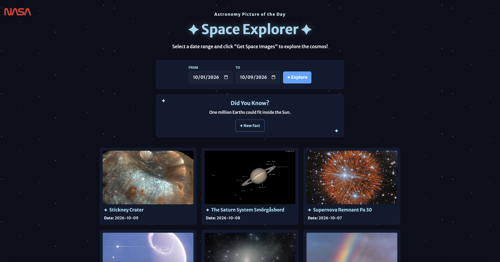
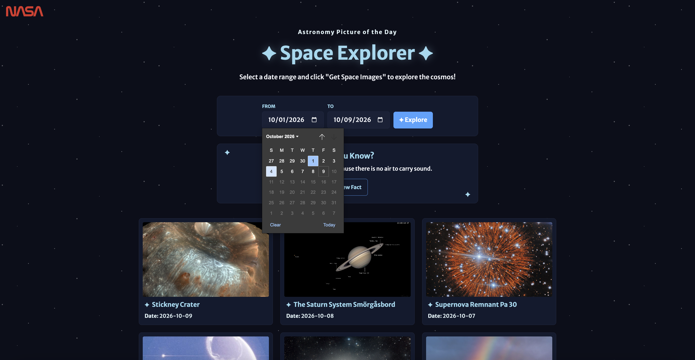
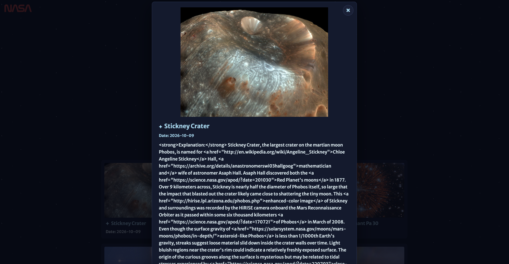

Web app · NASA API
NASA Space Explorer
An interactive gallery that makes exploring NASA's Astronomy Picture of the Day archive simple, visual, and engaging.
My role
Interface design and front-end development
Tools
HTML, CSS, JavaScript, NASA APOD API
Project type
Personal web development project

01 / Project overview
Project overview
NASA Space Explorer is a web app that allows users to explore NASA's Astronomy Picture of the Day (APOD) archive by selecting a start and end date. Using NASA's API, the app retrieves astronomy imagery and presents the results in a visual gallery.
I built this project to practice my HTML, CSS, and JavaScript skills while learning how to work with an external API. I also wanted to create an experience that makes discovering space imagery feel approachable and enjoyable.
02 / The challenge
Making space easier to explore
NASA's APOD archive offers astronomy content from different dates, but I wanted to make it easy for visitors to explore multiple entries in one place instead of viewing just one image at a time.
My challenge was to connect the API to a simple interface, organize the results into an easy-to-browse gallery, and provide more information without overwhelming the main viewing experience.
My design question
How might I make discovering astronomy imagery intuitive and engaging through a simple, interactive web experience?
03 / Design and development
Designing the experience
I focused on making the main interactions easy to understand while giving the website a visual identity inspired by space.
Date-range exploration
I added start and end date inputs so users can choose a period to explore. JavaScript uses those selections to request the corresponding entries from NASA's API. The date inputs also provide a default range and limit the available dates to the archive's supported period.
A visual image gallery
Instead of presenting API results as raw data, I organized image entries into gallery cards featuring the image, title, and date. This gives users a visual way to scan the results and decide what they want to explore further.

More details without clutter
Clicking a gallery card opens a modal with a larger image, its title, date, and NASA's explanation. Keeping the explanation in the modal allows the gallery to remain focused on browsing while giving users access to more context when they want it.

Small moments of discovery
I added a "Did You Know?" section featuring random space facts. A New Fact button lets users discover another fact without leaving the page. This adds a small interactive element beyond browsing images.
A space-inspired visual identity
I used a dark background, a subtle animated starfield, blue accents, and the NASA worm logo to establish a consistent space theme. I also used typography, spacing, and interactive effects to help important elements stand out.
04 / Development
Connecting the interface to NASA's API
One of the main technical challenges was connecting the date inputs to NASA's API and turning the returned data into a working gallery.
I used JavaScript's Fetch API to request entries for the selected date range, then dynamically created gallery cards from the results. I also separated the date-input setup into its own JavaScript file to keep that functionality organized.
I added feedback for different states of the experience, including prompts when dates are missing, a loading message while the request is in progress, an error message if the request fails, and a message when no displayable images are found.
Working through these details taught me that building a useful interface involves more than displaying successful results. The experience also needs to guide users when information is missing or something goes wrong.
05 / Next steps
What I would improve next
If I continued developing NASA Space Explorer, I would focus on helping users discover more content and making the experience even more useful.
06 / Reflection
Key takeaway
Building NASA Space Explorer helped me connect front-end development with interface design. I learned how to retrieve information from an external API, transform that data into interactive components, and create different states to guide users through an experience.
The project also showed me how visual presentation and small interactions can shape the way people explore information. Moving forward, I want to keep building products that balance technical functionality with thoughtful, approachable design.